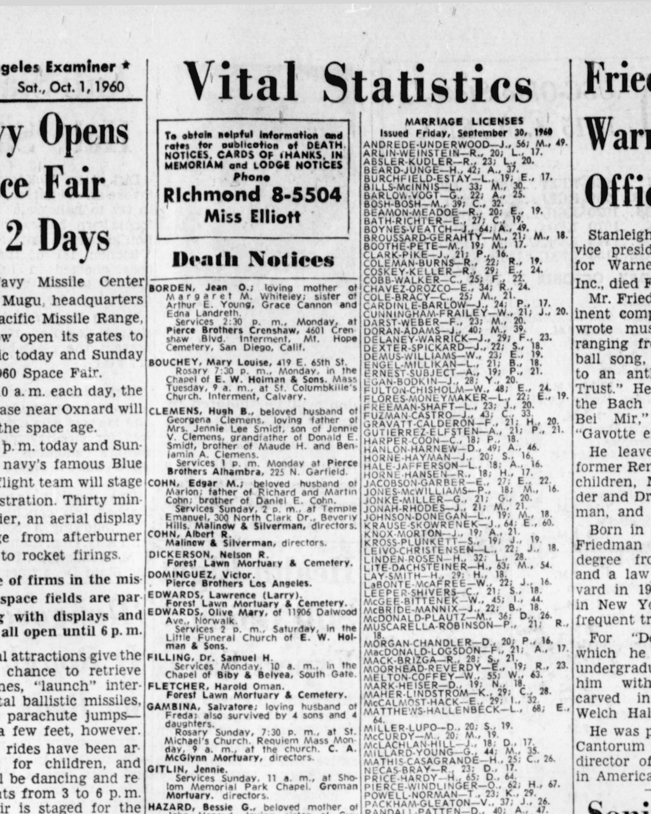

Patricia Elfsten b. 1940
Peter's first cousin once removed.
Living. As for every living relative on this site, the birth date is given by year only, and no current address is shown.
Patricia Elfsten was born in 1940 (according to the family's 2015 tree)1, the daughter of Robert H. Elfsten and Margaret Hall3,4. She married Armando Gutierrez on 2 Oct 1960 in Los Angeles, California, United States5.
Family
- Parents
- Robert H. Elfsten d. 1987 and Margaret Hall 1919–1978 documented
- Husband
- Armando Gutierrez · married on 2 Oct 1960 in Los Angeles, California, United States
- Children
- Kathy Gutierrez b. 1961 documented
- Christina Gutierrez b. 1963 documented
- Mark Gutierrez b. 1965 documented
- Kurt Gutierrez tradition
Life events
| Event | Date | Place and details |
|---|---|---|
| Born | 1940 | According to the family's 2015 tree1 |
| Note | 1 Oct 1960 | Los Angeles, California, United States Applied for a marriage licence in Los Angeles County, California (published 1 October 1960): Armando Gutierrez ('A. Gutierrez', age 21) and Patricia Elfsten ('P. Elfsten', age 21).2 |
Records


Sources
- Peter's tree, danenberg.sql, 2007–2015, personae 150, birth.
- Marriage Licenses: Gutierrez-Elfsten, Los Angeles Examiner (Los Angeles, California), 1 October 1960, p. 18.
GUTIERREZ ELFSTEN-A., 21; P . 21.
Translation: GUTIERREZ-ELFSTEN—A., 21; P., 21.
Applied for a marriage licence in Los Angeles County, California (published 1 October 1960): Armando Gutierrez ('A. Gutierrez', age 21) and Patricia Elfsten ('P. Elfsten', age 21).
- Peter's tree, danenberg.sql, 2007–2015, parentages 6.
- Household of Robert H Elfsten and Margaret E Elfsten, Los Angeles, California, 1940 US Census, Sheet 7A, Household 241.
Name: Robert H Elfsten | Age: 22 | Estimated Birth Year: abt 1918 [abt 1918] | Gender: Male | Race: White | Birthplace: Idaho | Marital Status: Married | Relation to Head of House: Head | Home in 1940: Los Angeles, Los Angeles, California | Map of Home in 1940: Los Angeles, Los Angeles, California | Street: West 10th Street | House Number: 2403 1/2 | Farm: No | Inferred Residence in 1935: Rural, Idaho | Residence in 1935: RuralIdaho | Resident on farm in 1935: No | Sheet Number: 7A | Number of Household in Order of Visitation: 241 | Occupation: Dish Washer | House Owned or Rented: Rented | Value of Home: 30 | Attended School or College: No | Highest Grade Completed: High School, 4th year | Hours Worked Week Prior to Census: 57 | Class of Worker: Wage or salary worker in private work | Weeks Worked in 1939: 36 | Income: 720 | Income Other Sources: No | Neighbors: View others on page || Household: Robert H Elfsten 22 Head; Margaret E Elfsten 21 Wife; Patricia M Elfsten 1 Daughter; Wilma Duncan 24 Lodger; Dolores D Duncan 3 Lodger's Daughter
father: Robert H. Elfsten; mother: Margaret Hall
- Marriage of Armando M Gutierrez and Patricia M Elfsten, 2 Oct 1960, Los Angeles, California.
Name: Armando M Gutierrez | Gender: Male | Birth Year: abt 1939 [abt 1939] | Age: 21 | Marriage Date: 2 Oct 1960 | Marriage Place: Los Angeles, California, USA | Spouse Name: Patricia M Elfsten | Spouse Age: 21
Married Patricia M. Elfsten (age 21) on 2 Oct 1960 in Los Angeles County, California